RWONG (SHIFT) is an experimental typeface, each glyph of which is a hybrid of two different letters in the Latin alphabet. Several components come together at a specific angle to form a letter, read clearly only at that angle. The user can shift between the two letters by changing from uppercase to lowercase and vice versa, or pressing down the shift key while typing.
Initial sketch as a modular set of letters